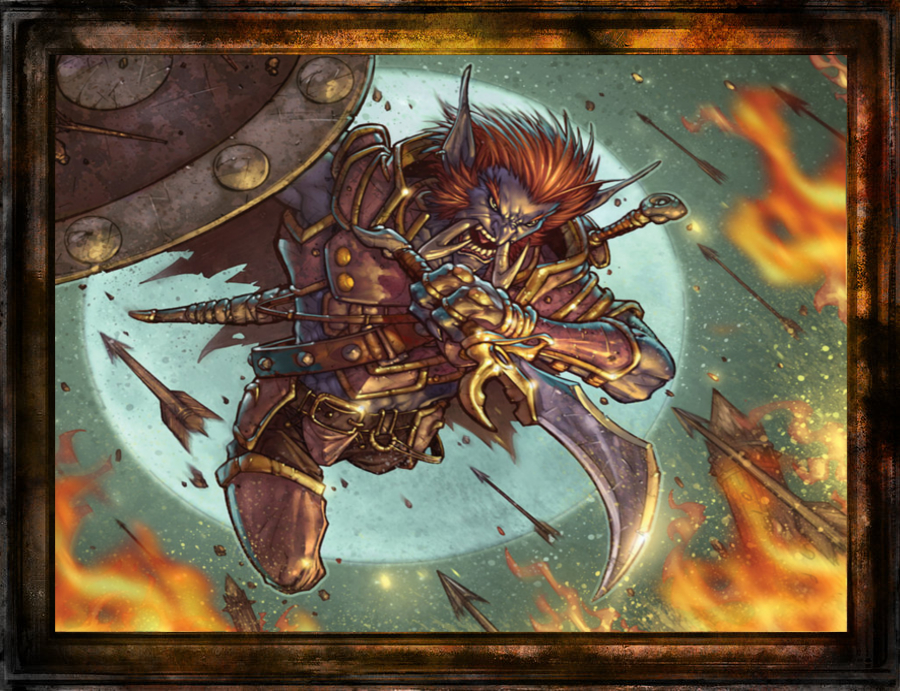
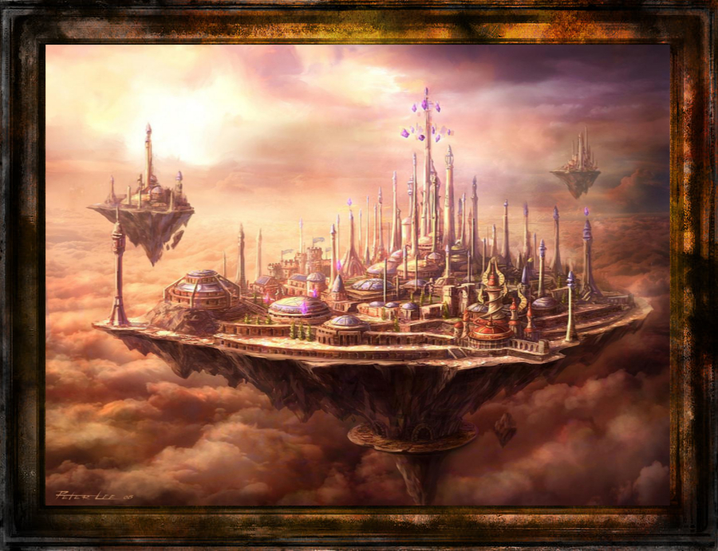
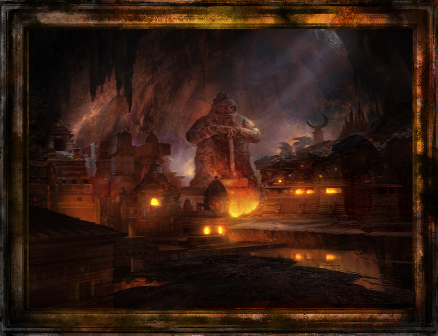
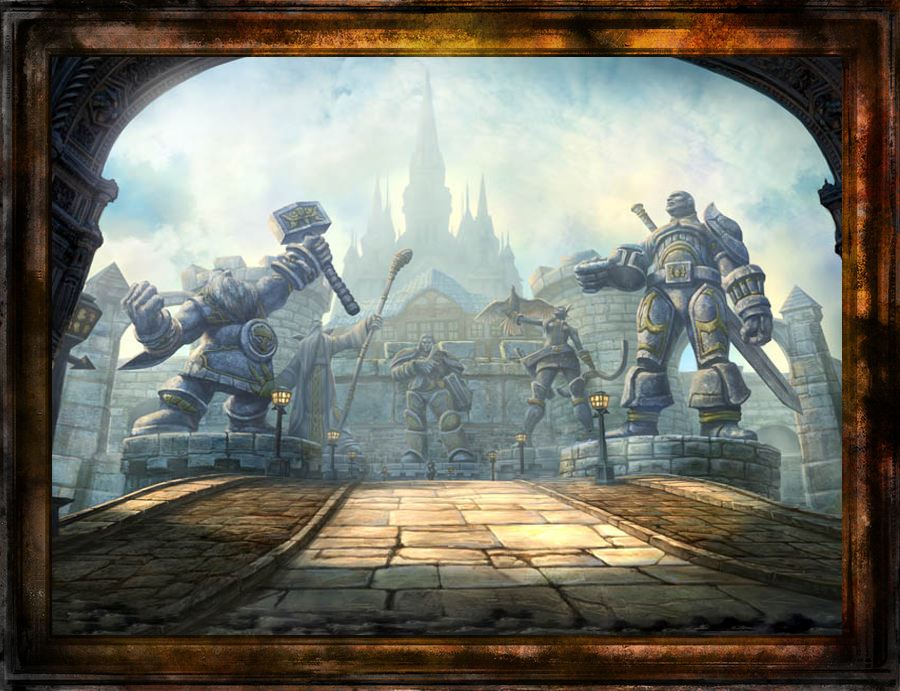
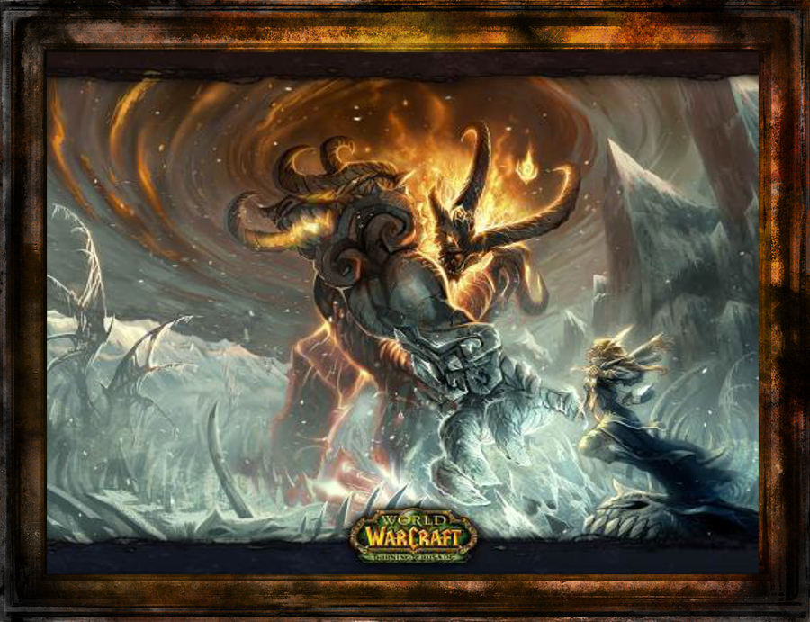
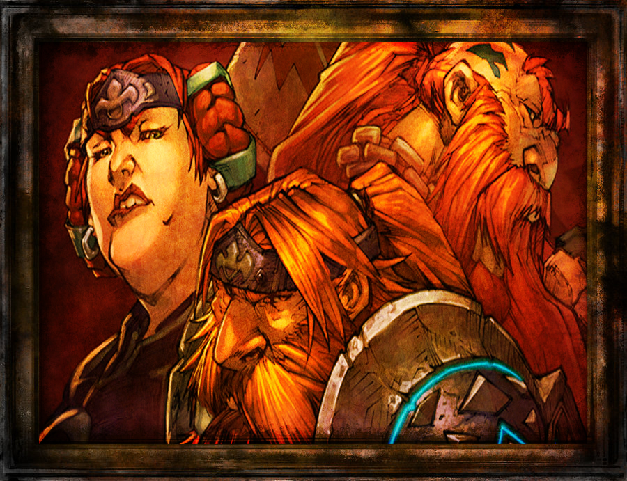

High elfii, condusi de Dath'Remar, parasesc Kalimdorul si infrunta furtunile Maelstromului pentru multe luni. Flotele acestora exploreaza insulele nou aparute pentru multi ani. Dath'Remar adopta numele Sunstrider, cel ce paseste ziua, iar cautarile pentru un loc unde magia exista incep.
Flotele sale ajung pe tarmurile unui regat ce ulterior va purta numele de Lordaeron, si decid sa isi construiasca un locas temporar de odihna in Tirisfal Glades. Dupa multi ani, un numar mare de elfi de acolo incep sa innebuneasca iar zvonurile cum ca sub Tirisfal doarme ceva cu adevarat malefic il forteaza pe Dath'Remar sa paraseasca Tirisfal si sa mearga spre Nord. In calatoriile lor intalnesc multe triburi, oamenii primitivi, trolii de padure din Zul'Aman, dar probabil cea mai profunda revelatie era ca isi pierdeau usor-usor coloratia violet a pielii si nu mai aveau nemurirea pe care o posedau candva, multi murind de inanitie si conditiile de mediu precare.
Imperiul Amani a reprezentat o provocare masiva, deoarece erau o rasa barbarica ce isi puteau reveni cu usurinta dupa batalie si chiar isi puteau regenera member pierdute, insa dupa multi ani reusesc sa gaseasca o zona ce le amintea de Kalimdor, adanc in padurile nordice ale continentului fondeaza regatul Quel'Thalas si jura sa creeze un imperiu maret ce il va facea pe cel vechi sa fie mic prin comparative. Regatul a fost fondat insa pe un vechi sit de troli care era considerat sacru iar atacurile Amani s-au intensificat.
O serie de elfi mai precauti au creat o serie de Runestones pentru a masca prezenta elfilor de Burning Legion dar si pentru a speria trolii primitivi, astfel ca pe masura ce timpul avansa, Quel'Thalas devine regatul magic de mult visat al elfilor. Razbunarea trollilor urma sa apara insa cand o mareata armata ataca orasul impresionant Quel'Thalas
Arathor si razboaiele cu trolii
Pe masura ce high elfii lupta pentru vietile lor impotriva macelului trolilor, triburile nomadice imprastiate ale oamenilor din Lordaeron luptau pentru a-si consolida propriile taramuri. Triburile umane se atacau reciproc si nu exista semn de unificare. Insa un trib, Arathi, a vazut pericolul reprezentat de troli si reuseste sa unifice triburile omenesti in un mare regat cu o fortareata impresionanta, Strom. Uniti sub un singur steag triburile umane au dezvoltat o puternica cultura de optimism. Thoradin, rege al Arathor, cunostea ca elfii misteriosi erau atacati de troli dar a refuzat sa isi riste siguranta propriilor oameni pentru a apara niste straini. Insa, diplomati din Quel'Thalas il conving pe rege sa ii ajute in schimbul invataturilor magice a unor oameni selecti. O suta de oameni au fost invatati magia si desi oamenii erau considerati neindemanatici si lipsiti de gratie, aveau o afinitate clara pentru magie. O armata unificata de elf-om a reusit sa invinga armatele de troli din muntii Alterac. Astfel s-a stabilit cooperarea elf-om pentru decadele ce urmau sa vina.

Gardienii din Tirisfal
Cu absenta trolilor din taramurile nordice, elfii din Quel'Thalas isi indreapta eforturile pentru a-si reface regatul glorios, in timp ce societatea Arathiana prospera. Arathor moare de batranete, iar din cei 100 de magi invatati de elfi toti dau mai departe secretele magiei dar insa unei generatii care nu stia de precautia necesara, de razboi si de pericolul inerent al magiei; acesti tineri magicieni practicau magia pentru profitul personal fara grija fata de ai lor semeni.
Al doilea oras Arathian a fost fondat in nord si purta numele de Dalaran. Dalaran avea sa devina un oras destinat practicantilor de magie, avand un numar mai mare de libertati si putand sa-si continue studiile magice.
Agentii sinistri ai legiunii au fost manati inapoi insa, de acest abuz de magie din Dalaran. Desi acesti demoni relativ slabi nu au aparut in forta, au creeat confuzie si haos pe strazile orasului. Incidentele au ramas izolate, iar magistratii de la putere au facut tot in putina sa le mentina ascunse. Elfii au tratat insa cu seriozitate zvonurile despre demoni. Astfel si-au impartasit istoria despre legiune. Astfel au stabilit crearea consiliului din Tirisfal. Unde cei mai puternici vrajitori elfi si umani isi unesc purtea in un guardian care va fi campionul ce apara lumea de problema demonica. Astfel ambele societati s-au dezvoltat sub privirile ascunse ale Gardienilor din Tirisfal dupa orice semn de activitate demonica.

Ironforge – Trezirea Dwarfilor
In timpurile antice dupa plecarea titanilor din Azeroth, copiii lor, cunoscuti ca si Earthen au continuat sa formeze si sa pazeasca cavernele lumii. Earthen erau preocupati doar cu mineritul avutiilor subterane si nu aveau de aface cu rasele de suprafata. Catastrofa a afectat profund societatea Earthen, majoritatea alegand sa traiasca izolati in Uldaman, Uldum si Ulduar ( orasele antice ale Titanilor)
Nu este foarte clar ce a declansat trezirea insa, in Uldaman acei Earthen care s-au trezit au remarcat ca au suferit schimbari profunde in perioada de hibernare, pielea lor pietroasa a devenit moale si puterile lor asupra pietrei si pamantului au disparut, devenisera muritori.
Spunandu-si dwarfi, acestia au parasit Uldaman si au construit orasul Ironforge adanc in muntele lui Khaz, numit in onoarea titanului Khaz'goroth. Dwarfii erau fascinati de pietre pretioase si metale, devenind societati industriale bazate pe minerit, ramanand relative izolati de alte specii terestre.

Cele sapte regate
Strom a continuat sa fie capitala Arathor-ului, dar o data cu Dalaran, multe noi orase-stat au aparut pe continentul Lordaeron: Gilneas, Alterac, Kul Tiras au fost primele orase stat care au aparut cu traditii si specific propriu.
Sub privirea precauta a ordinului din Tirisfal, Dalaran era centrul cheie al oamenilor invatati, Magistrii de acolo au fondat Kirin Tor, o secta specializata cu catalogarea si studierea fiecarei vraji artifact si obiect magic cunoscut la acea vreme.
Gilneas si Alterac devin sustinatori ai orasului Strom si dezvolta armate marete cu care exploreaza muntii Khaz Modan. In aceasta perioada intalnesc oameni cu dwarfii si fac schimb de multe secrete de forja si inginerit. Khaz Modan este si locul unde descopera o pasiune pentru batalie si povesti. Kul Tiras si-a dezvoltat o economie prospera bazata pe pescuit si comert si o flota vasta.
Cu timpul insa lorzii din Strom incep sa isi mute vilele catre taramurile nordice pline de teren arabil si pasuni verzi, mai putin aride. Astfel este fondat un nou oras-stat: Lordaeron, ceva da numele intregului continent.
Descendentii lui Arathi calatoresc sud dincolo de muntii Khaz unde intemeieaza orasul Stormwind, ce ajunge rapid o putere de sine statatoare. Astfel, viziunea regelui Thoradin a unui regat uman unit a disparut.

Aegwynn si vanatoarea de dragoni
Desi rivalitatile si politicile celor sapte regate atingeau noi maxime si minime, un lucru a ramas constant si anume ordinul gardienilor impotriva haosului. Au fost multi Gardieni de-a lungul anilor insa numai unul a detinut puterile Tirisfal in o perioada de timp. O tanara fata s-a facut remarcata in lupta demonilor dar si prin credinta ca elfii antici si barbatii batrani ce conduceau consiliul erau prea rigizi in gandit si nu suficient de prevazatori pentru a pune un sfarsit conflictului.
Pe masura ce puterile ei cresteau a devenit constienta de un numar de demoni puternici in continentul inghetat din Northrend, aceasta a mers acolo unde cu ajutorul dragonilor albastri reuseste sa eradice toti demonii mai putin unul. Acesta era insa chiar Sargeras, Aegwynn debordand de o aroganta specifica tineretii se lupta cu demonul si il invinge. Insa nefiind convinsa ca l-a distrus complet ii inchide corpul in un vechi templu din Kalimdor. Aegwynn nu putea sti ca a savarsit exact ce Sargeras planificase, Sargeras posedand-o pe Aegwynn unde va ramane ascuns pentru multi ani lungi.

Razboiul celor trei ciocane
Dwarfii din Ironforge au trait pasnic pentru multe secole. Societatea lor a crescut pentru a fi prea mare pentru orasele lor subterane mici, si sub inaltul rege existau trei factiuni puternice: clanul Bronzebeard, clanul Wildhammer si clanul Dark Iron. Tensiunile reale au aparut cand inaltul rege a murit, iar Ironforge a izbucnit intr-un razboi civil. Clanul Wildhammer a plecat pentru a-si creea propriul oras in Grim Batol. Eventual, clanul Bronzebeard si clanul Wildhammer se vor uni pentru a distruge pe Dark Iron in lupta. Umiliti, clanul Dark Iron se retrage sub muntele Blackrock pentru a-si planui razbunarea, unde conducatorul lor, vrajitorul Thaurissan, reuseste sa cheme in existenta o fiinta inchisa chiar de titani, si anume pe Ragnaros, lord peste elementalii din foc. Orasul Grim Batol fusese blestemat insa, asa ca dwarfii Wildhammer au fondat Aerie Peak in inima continentului Lordaeron unde aveau sa imblanzeasca grifonii salbatici.

Ultimul gardian
Gardianul Aegwynn a devenit foarte puternic de-a lungul multor ani si a folosit energiile din Tirisfal sa isi extinda viata cu un numar formidabil de ani. Crezand in mod nesabuit ca a reusit sa il franga pe Sargeras pentru totdeauna, a continuat sa apere lumea de agentii legiunii timp de 900 de ani. Consiliul din Tirisfal a decratat in un final ca veghea sa s-a incheiat. Consiliul a decis ca Aegwynn sa se intoarca in Dalaran pentru a decide un successor, insa Aegwynn devenise paranoica de consiliu asa ca a decis singura cine avea sa o urmeze.
Aceasta a decis sa nasca un fiu caruia sa ii cedeze puterea, nu avea de gand sa lase consiliul sa il manuiasca pe el cum au manuit-o si pe ea; asa ca impreuna cu Nielas Aran nasc un fiu cu numele Medivh ce avea puterea implantata in el, insa nu putea fi trezita pana la maturitatea fizica. Din pacate spiritual lui Sargeras a trecut de la mama la fiu.
Medivh era foarte popular in adolescenta si faimos pentru puterile sale magice, adesea pleca cu prietenii sai Llane si Anduin in multe aventuri. Desi au cauzat multe pagube, erau in general agreeati de populatie. Cand Medivh ajunge la varsta de 14, puterile ascunse i se trezesc si se ciocnesc cu spiritual lui Sargeras, acesta intra in o coma de multi ani.
Cand se trezeste afla ca prietenii sai din copilarie ajung conducatorii Stormwind-ului. Acestea avea o dorinta arzatoare sa apere regatul insa Sargeras ii modifica sentimentele usor si subtil pentru a-l folosi pentru a doua invazie a Azeroth-ului.